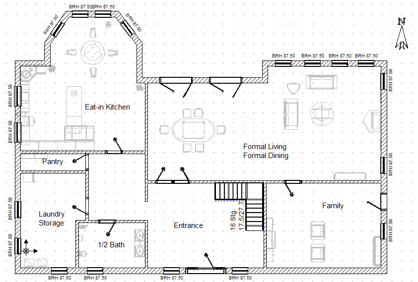
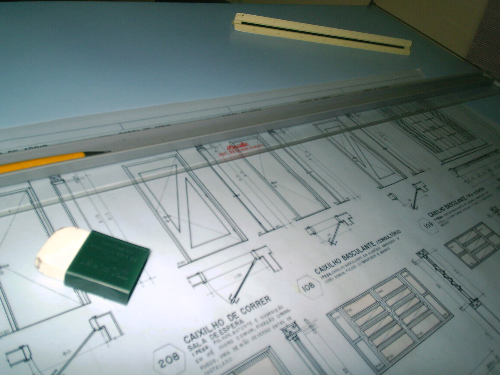

Feature
Cómo la IA puede revolucionar la arquitectura residencial
De la idea inicial al proyecto ejecutivo: dónde ya está cambiando el trabajo de los estudios de casas 🏡
La inteligencia artificial ya no es una promesa abstracta para la arquitectura. En estudios que diseñan viviendas, empieza a acelerar la fase conceptual, mejorar la comunicación con clientes, optimizar distribuciones y apoyar decisiones técnicas. La oportunidad no está en sustituir al arquitecto, sino en liberar tiempo de tareas repetitivas para dedicar más energía a diseño, criterio y experiencia de cliente.

La arquitectura de viviendas está entrando en una nueva etapa. No porque la IA vaya a diseñar casas por sí sola, sino porque empieza a comprimir semanas de exploración, coordinación y documentación en días —o incluso horas— cuando se usa bien. En un estudio que proyecta casas, esto cambia algo esencial: el arquitecto puede dedicar menos tiempo a tareas mecánicas y más a lo que realmente diferencia un buen proyecto, como el criterio espacial, la relación con el cliente y la calidad del diseño.
Key takeaways
Key Takeaways
- La IA ya está entrando en la práctica profesional: RIBA informó en 2025 que el 59% de los estudios de arquitectura del Reino Unido usan herramientas de IA generativa, mientras que AIA mostró que la profesión aún está en una fase temprana de adopción estructurada.
- En firmas y equipos de diseño, los usos más inmediatos están en imagen, texto, ideación, visualización y apoyo al flujo de trabajo, no en reemplazar la autoría arquitectónica.
- Para estudios de casas, el mayor impacto aparece en seis momentos: briefing, anteproyecto, distribución, visualización, análisis técnico y documentación.
- La ventaja competitiva no será “usar IA”, sino integrarla en procesos concretos del estudio para reducir iteraciones, responder antes al cliente y mejorar decisiones desde fases tempranas.
- El gran freno sigue siendo la confianza: precisión, propiedad intelectual, transparencia y control de calidad siguen siendo riesgos reales, y por eso la supervisión humana sigue siendo imprescindible.
1. La oportunidad real para un estudio de arquitectura de casas
En arquitectura residencial, cada proyecto combina emoción y fricción. El cliente quiere visualizar rápido su futura casa, comparar opciones, entender costes, anticipar normativa y tomar decisiones sin perderse en planos demasiado técnicos. Al mismo tiempo, el estudio necesita producir propuestas, ajustar distribuciones, coordinar documentación y mantener márgenes sanos. Ahí encaja la IA: como una capa de aceleración sobre procesos ya existentes.
McKinsey describe un escenario en el que la IA generativa puede trabajar con datos espaciales, uso del espacio y objetivos de rendimiento para producir planes arquitectónicos optimizados, dejando a arquitectos y diseñadores la parte de criterio, intención y emoción del diseño. Esa lógica encaja especialmente bien en vivienda, donde el reto suele ser equilibrar metros, luz, privacidad, circulación y presupuesto.
2. En qué partes del desarrollo puede transformar una empresa de arquitectura residencial
2.1 Briefing y captación del cliente
La primera revolución no empieza en el plano, sino en la conversación. Con IA, un estudio puede convertir reuniones, formularios y referencias visuales en resúmenes estructurados de necesidades: número de habitaciones, estilo deseado, prioridades familiares, presupuesto, restricciones urbanísticas y preferencias materiales.
Esto acorta una de las fases más difusas del proyecto: pasar de “quiero una casa luminosa y cálida” a un programa claro y accionable. También ayuda a detectar contradicciones antes: por ejemplo, cuando el cliente quiere amplitud, bajo presupuesto, máxima eficiencia energética y tiempos mínimos de obra. La IA no resuelve sola ese conflicto, pero sí lo hace visible antes. Esta aplicación se alinea con el uso temprano de chatbots, análisis de texto y generación de contenido que AIA detecta como puertas de entrada más comunes a la IA en la profesión.
2.2 Diseño conceptual y generación de alternativas
Aquí es donde la IA ya está siendo más visible. En la fase inicial, permite producir variaciones volumétricas, atmósferas, materiales y lenguajes visuales a gran velocidad. Eso no sustituye el concepto arquitectónico, pero sí acelera la exploración.
Perkins&Will publicó en 2024 un caso de estudio en su estudio de São Paulo sobre imágenes generativas aplicadas a fases iniciales del diseño. El objetivo fue precisamente evaluar ventajas, retos y percepción del uso de estas herramientas en práctica arquitectónica temprana. Además, su research journal muestra ejemplos de transferencia de estilo y co-creación visual para explorar conceptos antes de profundizar en el proyecto.
KPF también ha mostrado cómo utiliza herramientas de IA para crear visuales de alto impacto y desarrollar ideas más rápido, especialmente en comunicación y exploración visual. El patrón es claro: en estudios reconocidos, la IA está entrando primero como acelerador de representación, iteración y storytelling del diseño.
Para un estudio de viviendas unifamiliares o reformas integrales, esto puede significar algo muy concreto: presentar tres caminos sólidos al cliente en la primera semana, no uno solo.
2.3 Distribución de planta y testeo rápido de opciones
En residencial, una gran parte del valor del arquitecto está en resolver bien la planta. Cómo entra la luz. Cómo se cruzan padres, niños, invitados y trabajo en casa. Dónde están los ruidos. Qué se sacrifica y qué se protege.
Autodesk destaca que la IA en arquitectura transforma la concepción, el diseño y la ejecución del proyecto, especialmente cuando se usa para explorar alternativas y apoyar decisiones tempranas. McKinsey, por su parte, subraya que los modelos generativos pueden superponer datos espaciales y objetivos de uso para proponer configuraciones optimizadas.
Para una empresa que diseña casas, esto abre un caso de uso potentísimo: generar y comparar múltiples layouts según reglas definidas por el estudio. No para aceptar ciegamente el resultado, sino para evaluar más opciones con menos coste de tiempo. La consecuencia práctica es sencilla: mejores decisiones antes de congelar el anteproyecto.
2.4 Visualización para vender mejor el proyecto
Muchos proyectos residenciales no se bloquean por falta de diseño, sino por falta de comprensión. El cliente no “ve” la casa todavía. La IA acelera renders conceptuales, variaciones de materiales, escenas habitadas e incluso cambios rápidos de ambiente para alinear expectativas mucho antes.
Eso tiene dos impactos directos en negocio: primero, mejora la tasa de conversión comercial; segundo, reduce cambios tardíos por malentendidos.
AIA encontró que las aplicaciones más comunes de IA en la práctica están ligadas a chatbots, generadores de imágenes y análisis de texto, mientras que en uso a nivel de firma destaca la producción de contenido, incluida imagen y vídeo. En arquitectura residencial, esa capacidad puede convertirse en una ventaja brutal de comunicación con clientes no técnicos.
2.5 Sostenibilidad, rendimiento y decisiones técnicas tempranas
Una casa bien diseñada hoy ya no solo debe ser bonita: debe rendir bien en energía, confort y coste operativo. Autodesk señala que la IA está ganando peso como facilitador de sostenibilidad y también ha mostrado casos y aprendizajes sobre cómo herramientas de IA pueden ayudar a predecir uso energético, impacto de carbono y comportamiento climático desde fases tempranas.
Para estudios residenciales, esto puede traducirse en decisiones más rápidas sobre orientación, huecos, sombra, ventilación, materialidad o envolvente, sin esperar siempre a simulaciones largas en etapas posteriores. No elimina el cálculo especializado, pero sí mejora la calidad de las primeras decisiones.
2.6 Documentación, normativa y coordinación
La parte menos glamourosa del estudio también es donde más tiempo se pierde. AIA detectó que muchas firmas siguen siendo ineficientes en procesos como actualización de librerías, investigación de producto y redacción compleja, y que la adopción de IA todavía no está concentrada en esos puntos de dolor más profundos.
Eso sugiere una oportunidad enorme para despachos de vivienda: usar IA no solo para “hacer imágenes”, sino para apoyar memoria descriptiva, comparar normativas, revisar consistencia documental, resumir cambios de cliente y acelerar coordinación interna. Ahí está una parte importante del retorno económico real.
3. Qué están enseñando los estudios y organizaciones de referencia
Los estudios más visibles no están planteando la IA como sustitución del arquitecto, sino como copiloto creativo y operativo. Perkins&Will la ha estudiado en fase conceptual. KPF la ha incorporado a visualización y desarrollo narrativo de propuestas. RIBA y AIA muestran que la adopción está creciendo, pero también que la profesión mantiene reservas fuertes sobre precisión, seguridad, autenticidad y transparencia.
En paralelo, Autodesk presenta la IA como una pieza cada vez más integrada en el ecosistema AECO, y herramientas como SketchUp AI ya ofrecen generación de objetos, ayuda conversacional y apoyo a modelado y visualización. Para un estudio residencial, eso significa que la barrera de entrada tecnológica empieza a bajar.
4. Lo que no hay que hacer
El error más común sería pensar que la IA resuelve sola el proyecto. No entiende por sí misma el contexto urbano, la vida real de una familia, los compromisos constructivos o la sensibilidad espacial que distingue una vivienda correcta de una casa extraordinaria.
Además, los riesgos son reales. RIBA remarca cuestiones de uso responsable, y AIA recoge preocupaciones altas sobre errores, uso indebido de datos, seguridad, autenticidad y transparencia. Por eso, un estudio serio debe trabajar con reglas claras: revisión humana, trazabilidad, control de prompts y validación técnica antes de entregar nada al cliente.
Conclusión
La IA puede revolucionar la arquitectura residencial, sí, pero no como un atajo mágico. Su verdadero impacto está en convertir un estudio de arquitectura de casas en una organización más rápida, más clara y más precisa: capaz de explorar más opciones, comunicar mejor, detectar problemas antes y dedicar más tiempo al diseño con valor.
Los estudios que ganen no serán los que generen más renders con IA, sino los que consigan integrarla en su proceso completo: desde el briefing hasta la documentación. En vivienda, eso puede marcar la diferencia entre un despacho que sobrevive por oficio y uno que escala por sistema.
Further Reading
- AIA — Artificial Intelligence Adoption in Architecture Firms: Opportunities & Risks
- RIBA — AI Report 2025 y guía sobre riesgos para prácticas de arquitectura
- Perkins&Will — caso de estudio sobre imágenes generativas en fase inicial de diseño
- Autodesk — IA en arquitectura y State of Design & Make 2025
- McKinsey — gen AI en real estate y productividad en construcción

